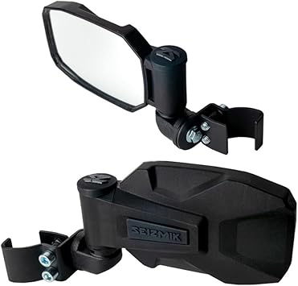

← volconaccessories.com
Volconaccessories: What We'd Buy With Our Own Money
May 2026
The honest truth about volconaccessories: most products are decent. What separates good from great are details you won't find in a product listing.
Common Pitfalls
- Not measuring — "It looked bigger online" is the #1 return reason for volconaccessories. Measure twice.
- Waiting for the perfect deal — If you need volconaccessories now, buy now. A 10% discount in 3 months costs you 3 months of use.
What We Recommend
→ #2 — 12V Universal UTV Horn Kit with Blue Rocker Switch Compatible with Polaris — Highly reviewed
→ #1 — BETOOLL Upgraded Adjustable Pair UTV Side Mirror Set 1.75 or 2inch Roll Bar — Top rated
→ #4 — UNIGT 150pcs ATV UTV Body Fastener Rivets Push Pin Compatible with Can Am — Highly reviewed
→ #3 — UNIGT 2 Pack UTV Hook for Hanging Headsets Helmet and Goggles Multipurpose — Editor's pick

→ #5 — Handlebar Engine Start Switch Universal Motorcycle ATV UTV Green Button — Best seller
The Specs That Matter
- Return policy — Easy returns mean lower risk. Even well-reviewed volconaccessories might not suit your situation.
- Value ratio — Mid-range volconaccessories usually deliver 90% of premium performance at half the cost.
- Verified reviews — Focus on 4+ star products with 50+ verified reviews. Ignore anything with only a handful of ratings.
- Price trends — volconaccessories prices fluctuate. Track your picks and buy when the price dips.
- Availability — In-stock with fast shipping beats a "better" product backordered for weeks.
Pro Tips
- Check "Frequently Bought Together" — it shows what extras you might need for your volconaccessories.
- Buying volconaccessories as a gift? Pick something with easy exchanges. Preferences are personal.
- The Q&A section on volconaccessories listings often answers questions that no review covers.
Our Take
2026 has brought quality volconaccessories options at every price point. See our complete guide for current recommendations.
Affiliate Disclosure: As an Amazon Associate, we earn from qualifying purchases. This doesn't affect our recommendations.